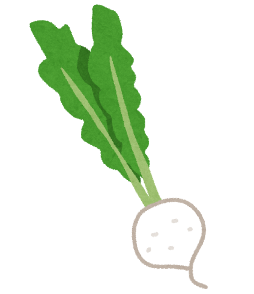

農村體驗
客製蔬果箱
蔬果知識小遊戲
關於我們
問與答
新鮮蔬果
聯絡我們
立即買
蔬菜介紹
生產過程特點
採用對環境友善的栽培方式種植，栽培過程不使用農藥，並搭配AI智慧監控技術，有效控制環境含氮量、溫度、病蟲害防治，提高生產力。
生產流程介紹
1.育苗
2.土壤準備
3.移植
4.肥料
5.疏苗
6.灌溉
7.採收

蔬菜產期表
月份
1
2
3
4
5
6
7
8
9
10
11
12
高麗菜
小白菜
萵苣
紅蘿蔔
白蘿蔔
玉米
大番茄
地瓜
品種介紹
生產的農產品